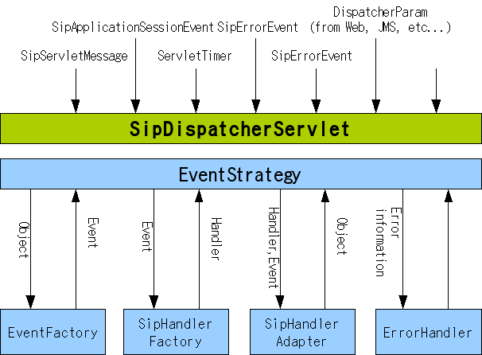

sf-api
SIPサーバの作成
SSFの動作
SSFは起動時に以下の処理を行います。
- ユーザ作成のPOJOをApplicaitonContextより取得
- ハンドラとなるPOJOからアノテーション情報を取得し、イベントマッピング情報として登録
この処理によりSipDispatcherServletで受信したイベントをPOJOに対して通知することが可能になります。
イベント受信時のSSFの基本動作は以下の図のようになります。
- ハンドラ用のイベントの作成
- 作成されたイベントを確認し、イベントマッピング情報に対応したハンドラを取得
- 生成されたイベントをハンドラに渡し、処理を実行
- エラーが発生した場合、ErrorHandlerにてエラー処理の実行
次にこの動作のためのハンドラとなるPOJOを作成します。
イベントハンドラの作成
イベントを受け付けるPOJO(Bean)を作成します。
RegistrarHandler
登録サーバとしてREGISTERリクエストを受け付けるハンドラを作成します。
@Component
public class RegisterHandler {
@Resource
RegistrarBean registrarBean;
@Resource
CheckRequireBean requireBean;
@SipServletRequestMapping(methods = { "REGISTER" })
public void handleRequest(SipServletRequest req)
throws ServletParseException, IOException {
// start
this.requireBean.handleRequest(req);
if (!req.isCommitted()) {
this.registrarBean.handleRegister(req);
}
// end
}
}
各アノテーションについて説明します。
- @Component
SpringFrameworkにより提供されるアノテーションです。 設定によりBeanが自動検出・登録され、ApplicationContext上から取得可能となります。
- @Resource
このアノテーションは、SpringFrameworkにより自動注入されるフィールドに対して付与しています。 指定されたクラスがSpringFrameworkの設定から注入されます。
- @SipServletReqeustMapping
SSF独自のアノテーションとなります。 この場合、SIPリクエストのメソッドが"REGISTER"の場合に本メソッドが呼び出されます。 また、メソッドの引数は自動的に注入されます。
本ハンドラでは、REGISTERリクエスト受信時に以下の処理を行います。
- Requireヘッダの確認
- リクエストを確認し、ロケーション情報の登録を実行し、200/REGISTERを返します。
注入されている各Beanの詳細については、ソースを参照してください。
ProxyHandler
また、プロキシのためのハンドラにおいても同様に作成します。
@Component
public class ProxyHandler {
private Logger logger = LoggerFactory.getLogger(ProxyHandler.class);
@Resource
ProxyBean proxyBean;
@Resource
CheckRequireBean checkRequire;
@SipServletRequestMapping(methods = { "INVITE", "UPDATE",
"MESSAGE", "PUBLISH" })
public void handleRequest(SipServletRequest req) throws Exception {
// start
if (logger.isDebugEnabled()) {
logger.debug("handleResquest:[req=" + req + "]");
}
checkRequire.handleRequest(req);
if (req.isCommitted()) {
return;
}
proxyBean.startProxy(req);
// end
}
@SipServletResponseMapping(status = "1xx")
public void handleProvisionalResponse(SipServletResponse res) {
if (logger.isDebugEnabled()) {
logger.debug("handleProvisionalResponse:[res=" + res + "]");
}
}
@SipServletResponseMapping(status = "2xx")
public void handleSuccessResponse(SipServletResponse res) {
if (logger.isDebugEnabled()) {
logger.debug("handleSuccessResponse:[res=" + res + "]");
}
}
@SipServletResponseMapping(status = "3xx")
public void handleRedirectResponse(SipServletResponse res) {
if (logger.isDebugEnabled()) {
logger.debug("handleRedirectResponse:[res=" + res + "]");
}
}
@SipServletResponseMapping(status = { "4xx", "5xx", "6xx" })
public void handleErrorResponse(SipServletResponse res) {
if (logger.isDebugEnabled()) {
logger.debug("handleErrorResponse:[res=" + res + "]");
}
}
プロキシ対象とするSIPリクエストの処理および応答受信時の処理を記述しています。 リクエスト受信時には、プロキシを実行するための処理をBeanへ委譲しています。 応答受信時にはログへの出力のみを実行しています。
次に、これらのハンドラをSpringのApplicationContextに登録します。
Spring設定ファイルの変更
作成したBeanを読み込むために、設定ファイルを修正します。
- common-beans.xml
WebアプリおよびSIPアプリ、共通で利用するBeanを登録するため、以下の設定を追加します。
<context:annotation-config/> <context:component-scan base-package="com.oki.test.services.impl" />
本パッケージには、以下のBeanが含まれます。
- UserManagementService
SIPサーバ上のユーザを管理します。 サンプル実装として、どのようなユーザも存在しているものとして処理されます。 singleton Scopeにて管理されます。
- LocationService
ユーザのContact情報を管理します。 サンプル実装として、メモリ上にContact情報を保持します。 singleton Scopeにて管理されます。
- sip-dispatcher-servlet.xml
SIPアプリのためのBean設定を行います。
<context:component-scan base-package="com.oki.test.sip.sipserver" />
本パッケージには、以下のBeanが含まれます。
- ProxyHandler,RegistrarHandler
前述したSSFから呼び出されるハンドラです。
- CheckRequireBean
Requireヘッダを確認し、サポートしていない拡張が含まれている場合に420応答を返します。
- ProxyBean
リクエストを受け取ってLocationServiceからContact情報を取得し、Contact情報に対して リクエストをプロキシします。
- RegistrarBean
RFC3261 10.3 Processing REGISTER Requests に従った処理を行います。 REGISTERリクエストを受け取り、LocationServceに対してContact情報の登録/削除を 行い、ユーザのAoR(Address of Record)に対応するConctact情報を含む200/REGISTERを返します。
これらの設定により、使用されるBeanが読み込まれます。 各設定内容の詳細（context 名前空間）については、 The Spring Framework - Reference Documentation の 2.5.3. Annotation-based controllers 等を参照してください。
本設定により、指定されたパッケージのアノテーションから作成したBeanの設定が行われるようになります。
サンプルのソース以下のコマンドで入手可能です。
$ svn co https://mobicents.googlecode.com/svn/trunk/frameworks/sip-servlets/ssf/sf-examples